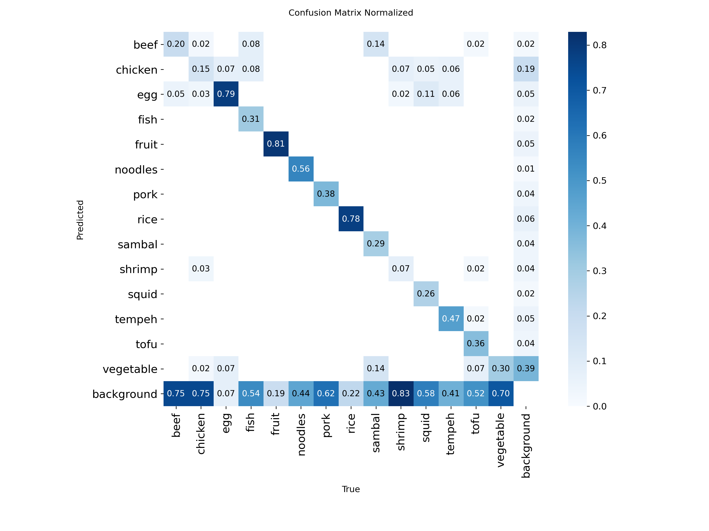
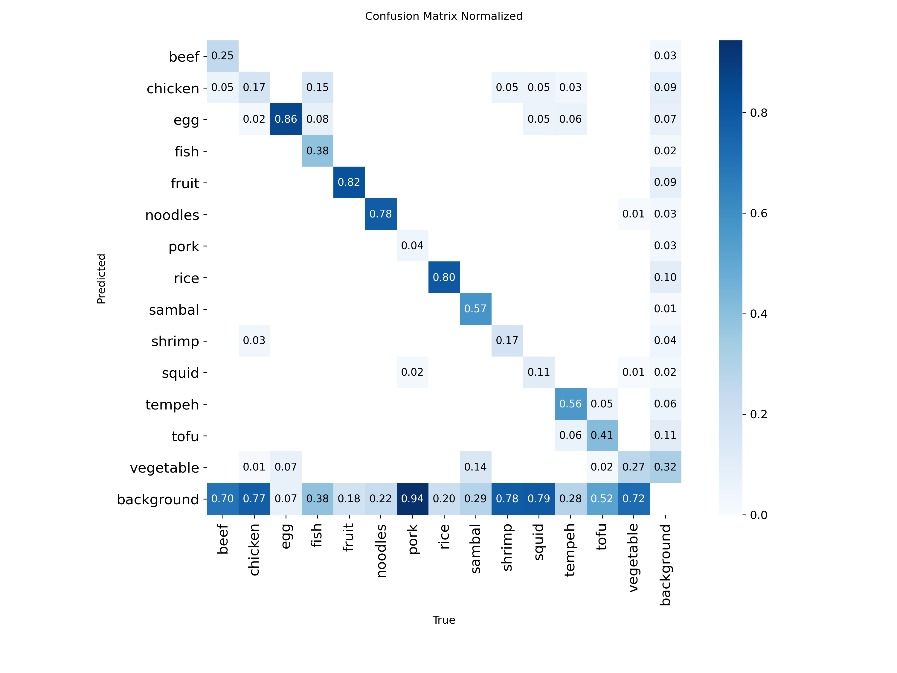
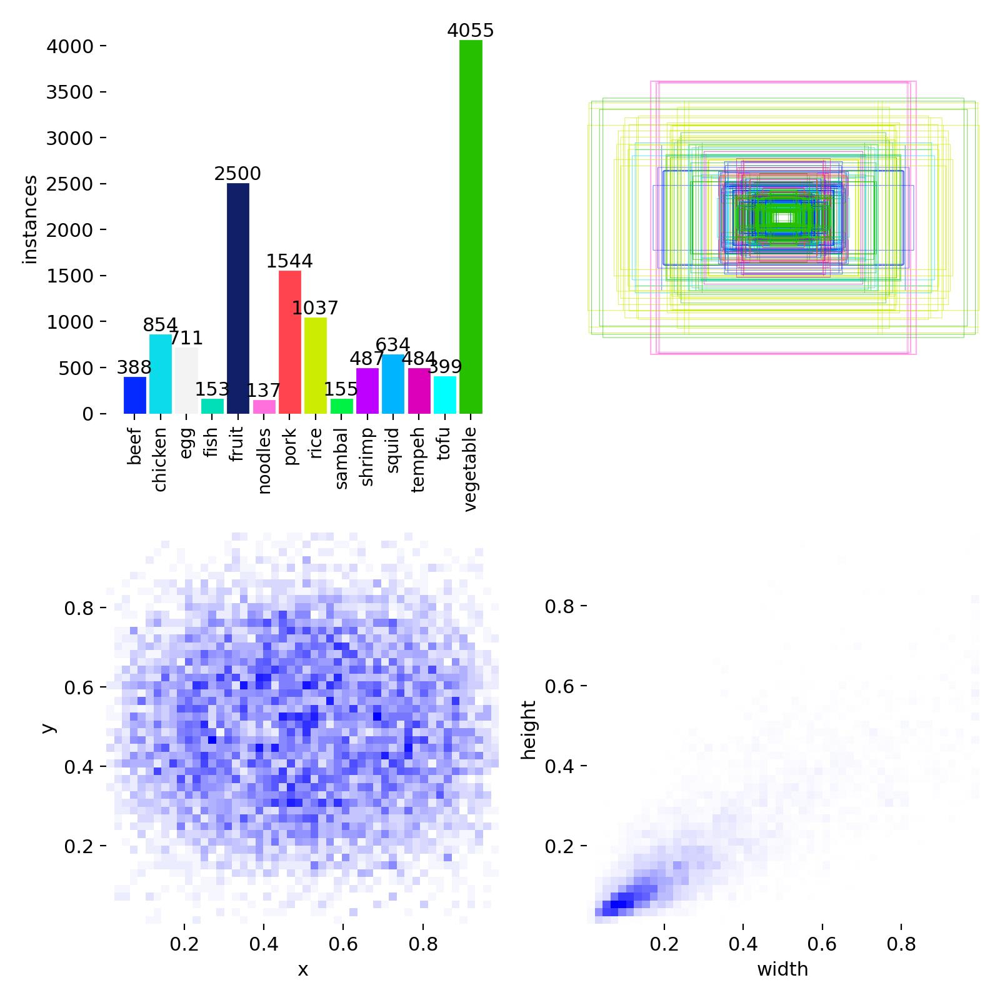
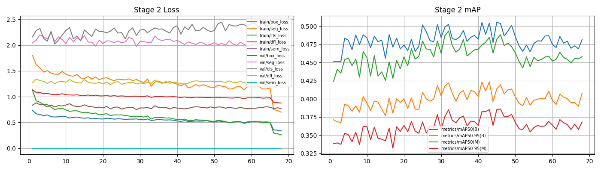
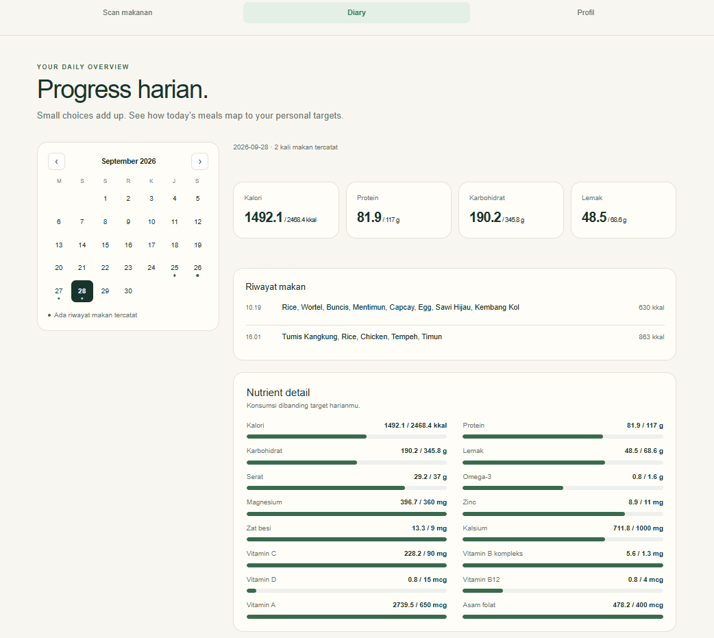
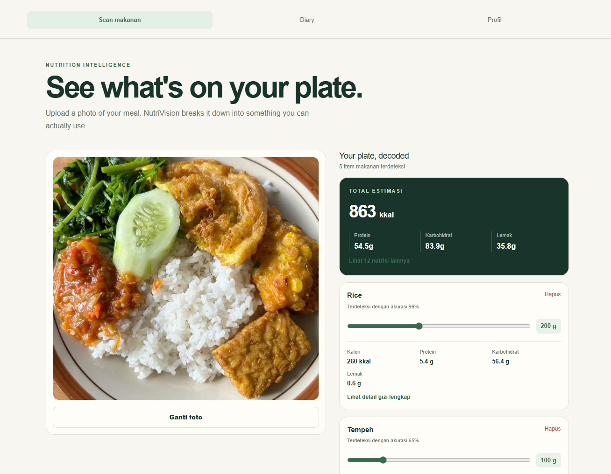

Two fine-tuning stages. Real gains.
YOLO11l-Seg trained in two stages on the 14-class food dataset. Stage 1 is the initial fine-tune; Stage 2 continues training with an Optuna-tuned hyperparameter search. Numbers below are each stage's best checkpoint by mask mAP50-95.
+10.8% vs. Stage 1 (0.348)
+8.5% vs. Stage 1 (0.387)
+11.4% vs. Stage 1 (0.422)
Stage 1 vs. Stage 2
Light bar: Stage 1 baseline (epoch 31/51). Dark bar: Stage 2, Optuna-tuned (epoch 46/68).
Stage 2 barely moves precision but pushes recall up double digits on both box and mask. For a nutrition app, that trade is the right one — a missed item on the plate means missing its calories entirely, while a slightly imprecise mask still gets roughly logged.
The Stage 2 confusion matrix shows meaningful background confusion on pork, squid, shrimp and tofu — items the model frequently misses rather than misclassifies — and the rarest classes in training (noodles, sambal, beef, all under 400 instances) are the ones most likely to be under-detected. More labeled examples for those classes is the clearest next lever, ahead of further hyperparameter tuning.
Evidence
Click any plot to enlarge.

Stage 1 confusion matrix (baseline)

Stage 2 confusion matrix (Optuna-tuned)

Dataset composition — instances per class

Stage 2 training curves (Optuna-tuned)
In action

Diary: 16 nutrients vs. daily target

Multi-item plate segmentation
Inference runs on EC2 and the web app on Vercel: this is a live deployment, not a local demo.